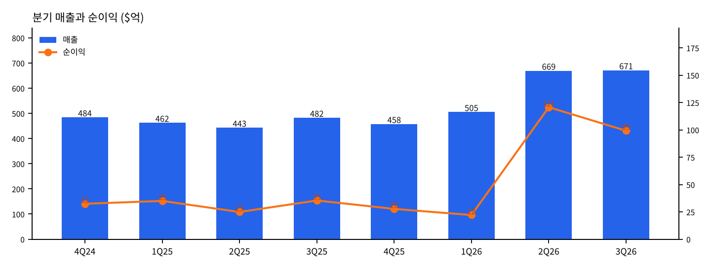
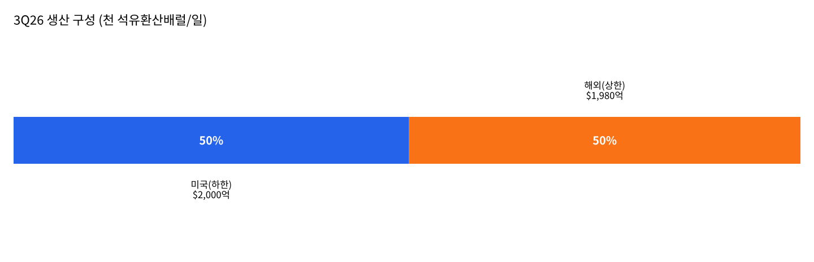
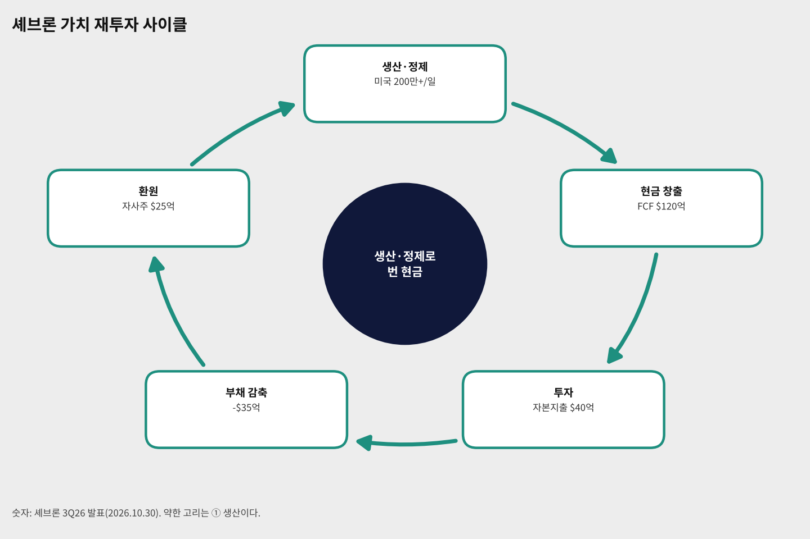

셰브론은 미국·카자흐스탄·가이아나 등에서 원유·가스를 생산하고 정유·화학 제품을 판매하는 통합 에너지 기업이다. 2025년 헤스(Hess) 인수로 가이아나 지분을 얻었다.
| 항목 | 내용 |
|---|---|
| 종목 | Chevron (CVX) · NYSE · 에너지(통합 석유) · 텍사스 휴스턴 |
| 멀티플 | PER·P/S는 08·09 항목 표 참조 |
| 최근 분기(3Q26) | GAAP EPS $5.06, 조정 EPS $5.28, 영업현금흐름 $160억 |
| 자본 지출 | 3Q 투자 $40억(2Q $45억), 제휴사 투자 $4억 |
| 직원 수 | 약 43,000명(트레이딩뷰) |
| 직책 | 인물 | 역할·특징 |
|---|---|---|
| 회장·CEO | 마이크 워스(Mike Wirth) | 생산 확대와 비용 효율을 강조(확인 필요: 3Q 콜 직접 인용 없음) |
| CFO | 에이미어 보너(Eimear Bonner) | 부채 감축·환원 설명(확인 필요) |
경영 스타일: '자본 효율과 현금 창출 우선'. 3Q에 투자를 줄이면서(자본 지출 $40억) 총부채를 줄이고 자사주 매입을 이어갔다. 베네수엘라 광구를 늘리고 바켄 경쟁력을 높이는 계획도 발표했다.
미국 정유소 원유 처리량 사상 최고, 가동률 98%(회사 발표).
멕시코만 신규 프로젝트(발리모어·웨일·앵커) 램프업으로 미국 생산이 2년 전보다 27% 늘었다.
다음 실적발표는 세 가지 질문에 답하는 자리다.
1. 가격 연동 생산 감소(권리분 효과)와 중동 영향이 이어지나?
2. 정제 마진 호조가 4Q에도 유지되나?
3. 부채 감축과 자사주 매입이 병행되나?
한 줄 판정 규칙: 첫 질문(생산)이 반등하고 둘째 질문(마진)이 유지되면 약한 고리(생산 감소)가 풀린다.
일정: 4Q26 실적 발표는 트레이딩뷰 기준 2027.01.22(확인 필요).
| 분기 | 매출 | 순이익 | EPS | 조정 EPS | 특이 사항 |
|---|---|---|---|---|---|
| 4Q24 | $484.1억 | $32.4억 | 1.82 | 2.06 | |
| 1Q25 | $462.4억 | $35.0억 | 2.00 | 2.18 | |
| 2Q25 | $442.9억 | $24.9억 | 1.44 | 1.77 | |
| 3Q25 | $482.4억 | $35.4억 | 1.82 | 1.85 | |
| 4Q25 | $457.6억 | $27.7억 | 1.39 | 1.52 | |
| 1Q26 | $505.2억 | $22.1억 | 1.11 | 1.41 | |
| 2Q26 | $669.3억 | $120.7억 | 6.11 | 6.06 | GAAP 이익에 높은 유가·정제마진 반영 |
| 3Q26 | $671.1억 | $99.2억 | 5.06 | 5.28 | 법적 충당 $1.6억·손상 $1.1억 등 제외 조정 EPS $5.28 |
3Q26 GAAP EPS $5.06, 조정 EPS $5.28(회사 발표, 2026.10.30). 매출·순이익·EPS(GAAP 희석)는 트레이딩뷰 스캐너, 조정 EPS는 트레이딩뷰 실적 페이지의 Reported 값이다. 분기 정렬은 오래된 분기→최신이다.

흐름 요약: 최근 분기 매출은 $671.1억로 전년 동기 $482.4억 대비 +39.1%, 순이익은 $99.2억(전년 $35.4억)다. 최근 4분기 GAAP EPS는 $13.67, 조정 EPS는 $14.27다.
| 구분 | 내용 | 3Q26 생산 | 비고 |
|---|---|---|---|
| 미국 | 퍼미안·멕시코만·바켄 | 2,000+ 천 BOED | 5분기 연속 일 200만 초과 |
| 해외(합계, 내 계산) | 카자흐스탄 TCO·가이아나·호주 등 | 약 1,980 천 BOED | 총 3,980 − 미국 2,000 이상(하한 기준 계산) |

미국이 총 생산의 절반 이상(내 계산: 약 50% 이상)이다. 해외는 총 생산에서 미국 하한을 뺀 상한 추정값이다.
셰브론은 '신뢰할 수 있는 운영으로 에너지를 공급하며 자본 효율과 현금 창출로 주주 수익을 만드는 것'을 목표로 한다.
| 축 | 내용 |
|---|---|
| 생산 | 미국 일 200만+ 석유환산배럴, 가이아나·TCO 확대 |
| 재무 | 총부채 -$35억, 부채/CFFO 0.6배 |
| 환원 | 자사주 $25억 + 배당 |

| 이동평균 | 값 | 종가 대비 | 위치 |
|---|---|---|---|
| 5일선 | $215.08 | -4.3% | 종가 아래 |
| 20일선 | $221.13 | -6.9% | 종가 아래 |
| 50일선 | $215.62 | -4.5% | 종가 아래 |
| 100일선 | $204.23 | +0.8% | 종가 위 |
| 200일선 | $196.35 | +4.9% | 종가 위 |
52주 고가 $236.48(2026-10-30)·저가 $146.49(2025-12-16) 범위에서 종가 $205.88는 100일선, 200일선을 웃돌고 5일선, 20일선, 50일선은 밑돈다.
| 규칙 | 기준 | 현재 값 | 신호 |
|---|---|---|---|
| 장기 추세 필터 | 종가 vs 200일선 | $205.88 > $196.35 | 매수 |
| 중장기 교차 | 50일선 vs 200일선 | $215.62 > $196.35 | 매수 |
| 단기 교차 | 20일선 vs 50일선 | $221.13 > $215.62 | 매수 |
| 돈키언 채널 | 55일 고가 $236.48 / 저가 $200.78 | 중간값 $218.63 아래 | 매도 |
| 1개월 모멘텀 | 21거래일 수익률 | -8.8% (기준 $225.71) | 매도 |
| 3개월 모멘텀 | 63거래일 수익률 | +0.1% (기준 $205.77) | 매수 |
| 6개월 모멘텀 | 126거래일 수익률 | +7.6% (기준 $191.33) | 매수 |
| 12개월 모멘텀 | 252거래일 수익률 | +33.0% (기준 $154.82) | 매수 |
| 종합 (8개 평균) | +0.50 | 매수 |
해석: 매수 신호 6개(장기 추세 필터, 중장기 교차, 단기 교차, 3개월 모멘텀, 6개월 모멘텀, 12개월 모멘텀), 매도 신호 2개(돈키언 채널, 1개월 모멘텀). CTA 점수 +0.50(매수). 14일 ATR $5.75 (2.8%), 52주 고가 $236.48 · 저가 $146.49.
| 가격 | 기준 | 무엇이 바뀌나 |
|---|---|---|
| $236.48 | 55일 고가 | 돌파 시 채널 상단 갱신 |
| $225.71 | 1개월 모멘텀 기준가 | 종가가 이 가격 위면 1개월 신호 매수 |
| $218.63 | 돈키언 중간값 | 55일 채널 중간값 위/아래로 신호가 바뀜 |
| $205.77 | 3개월 모멘텀 기준가 | 종가가 이 가격 위면 3개월 신호 매수 |
| $200.78 | 55일 저가 | 이탈 시 채널 하단 갱신 |
| $196.35 | 200일선 | 종가가 이 선 위/아래인지로 장기 추세 신호가 바뀜 |
| $191.33 | 6개월 모멘텀 기준가 | 종가가 이 가격 위면 6개월 신호 매수 |
| $154.82 | 12개월 모멘텀 기준가 | 종가가 이 가격 위면 12개월 신호 매수 |
가격 수준은 신호가 바뀌는 기준선일 뿐 진입·청산 가격 제안이 아니다. 20일/50일 교차는 이동평균 자체가 움직여 단일 가격으로 표시하지 않았다. 일봉·주봉은 종가 기준 직접 계산(고저 데이터 미사용)이다.
| 악재 요인 | 내용 | 강도 |
|---|---|---|
| 유가·마진 변동 | 가격 상승 때 생산 권리분이 줄고 타이밍 효과가 부정적 | 높음 |
| 중동 갈등 | 생산 감소 요인으로 지목 | 중간 |
| 법적·손상 비용 | 3Q 법적 충당 $1.6억, 손상 $1.1억 | 참고 |
| TCO 현금 의존 | TCO 배당·대출 상환이 FCF를 끌어올림 | 중간 |
| 티커 | 회사 | PER(TTM) | PEG | P/S | EPS 성장(YoY) |
|---|---|---|---|---|---|
| CVX | 셰브론 | 15.1배 | 0.16 | 1.76배 | +93% |
| XOM | 엑슨모빌 | 16.5배 | 0.42 | 1.76배 | +41% |
| COP | 코노코필립스 | 14.1배 | 0.43 | 2.46배 | +34% |
| OXY | 옥시덴탈 | 12.4배 | 0.06 | 2.32배 | +216% |
| EOG | EOG 리소시스 | 9.7배 | 0.18 | 2.77배 | +54% |
비교 결론: 셰브론 PER은 엑슨모빌과 비슷한 구간이다. GAAP EPS 성장이 +93%(저기저)라 PEG가 낮게 잡히는 효과가 있다.
셰브론은 3Q 영업현금흐름 $160억, 잉여현금흐름 $120억으로 부채를 줄이고 있다.
| 지표 | 값 | 출처 | 해석 |
|---|---|---|---|
| 현금·단기투자 | $131억 | 트레이딩뷰 스캐너(최근 분기) | |
| 총부채 | $335억 | 트레이딩뷰 스캐너(최근 분기) | |
| 순부채(부채−현금) | $204억 | 내 계산 | 현금 대비 부채 부담 |
| 잉여현금흐름(TTM) | $345억 | 트레이딩뷰 스캐너 | |
| TTM 매출 | $2,303억 | 트레이딩뷰 스캐너 |
| 기준 | 매출 | P/S | 비고 |
|---|---|---|---|
| 내 계산(종가 ÷ 최근 4분기 매출 합계) | $2,303.2억 | 1.76배 | 시총은 정렬용 데이터에서만 사용 |
| 동종(트레이딩뷰) | – | XOM 1.76배 · COP 2.46배 · OXY 2.32배 · EOG 2.77배 | 11.19 |
해석: P/S 1.84배는 매출 규모가 큰 정유 사업 특성상 낮다(내 해석).
EBITDA는 영업활동의 현금 창출력을 보는 지표이고, PEG는 PER을 EPS 성장률로 나눈 값이다. EBITDA·FCF는 트레이딩뷰 TTM 값이다.
| 지표 | 값 | 산출 |
|---|---|---|
| EBITDA(TTM) | $614억 | 트레이딩뷰 스캐너 |
| EBITDA 마진 | 26.7% | EBITDA ÷ TTM 매출(내 계산) |
| FCF 마진 | 15.0% | FCF ÷ TTM 매출(내 계산) |
| PER(GAAP TTM) | 15.1배 | $205.88 ÷ $13.67 |
| PER(조정 TTM) | 14.4배 | $205.88 ÷ $14.27 |
| 방식 | PER | EPS 성장률 | PEG | 판정 |
|---|---|---|---|---|
| GAAP EPS (TTM $13.67) | 15.1배 | +93% ($7.08 → $13.67) | 0.16 | 적극 매수 |
| 조정 EPS (TTM $14.27) | 14.4배 | +82% ($7.86 → $14.27) | 0.18 | 적극 매수 |
판정: GAAP EPS 기준 PEG 0.16 → 0.5 이하(적극 매수 구간) PEG 기준은 1.0 이하 투자 적격, 0.5 이하 적극 매수다. EPS 성장률은 최근 4분기 EPS 합계를 직전 4분기 합계와 비교한 값(내 계산)이고, 일회성 항목이 있으면 조정 EPS 행을 함께 본다.

셰브론의 사이클은 생산·정제 → 현금 → 투자 → 부채 감축 → 환원이다.
| 고리 | 현재 숫자 | 고리 강도 | 약해지는 신호 |
|---|---|---|---|
| ① 생산·정제 | 미국 일 200만+ BOED, 정유소 가동률 98% | 강함 | 권리분 감소 |
| ② 현금 창출 | CFFO $160억, FCF $120억 | 강함 | 마진 정상화 |
| ③ 투자 | 3Q 자본 지출 $40억 | 보통 | 프로젝트 지연 |
| ④ 부채 감축 | 총부채 -$35억 | 강함 | 유가 하락 |
| ⑤ 환원 | 자사주 $25억 | 강함 | FCF 감소 |
사이클의 특징: 가장 약한 곳은 ① 생산이다. 가격 연동 권리분과 중동 갈등으로 총 생산이 2Q보다 줄었다.